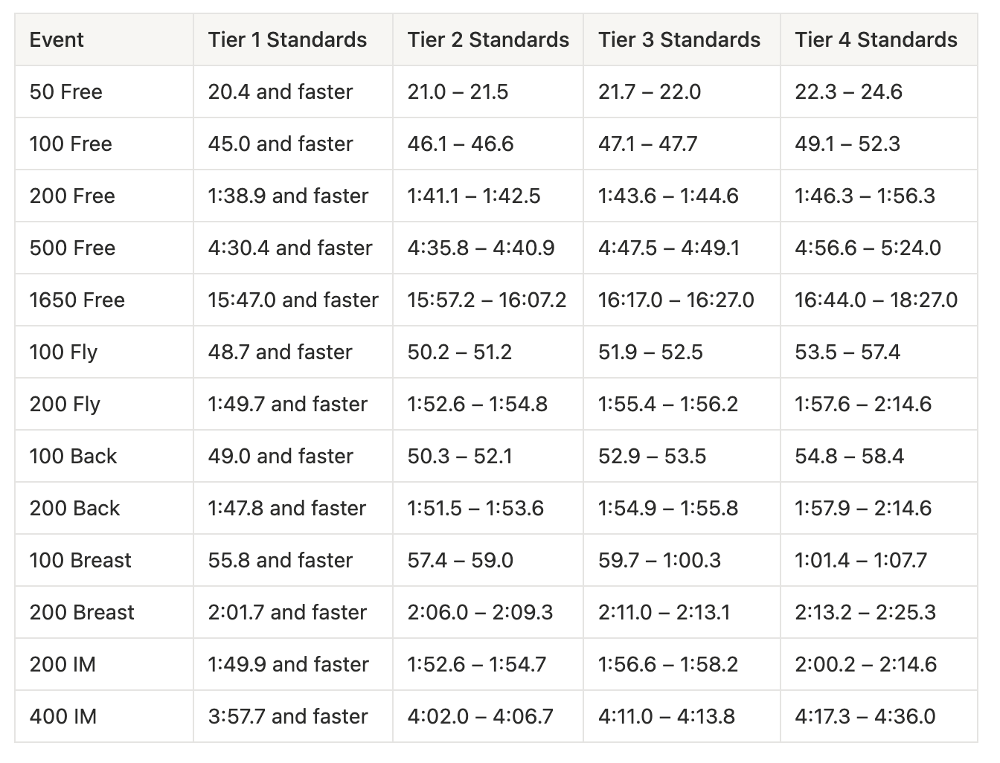
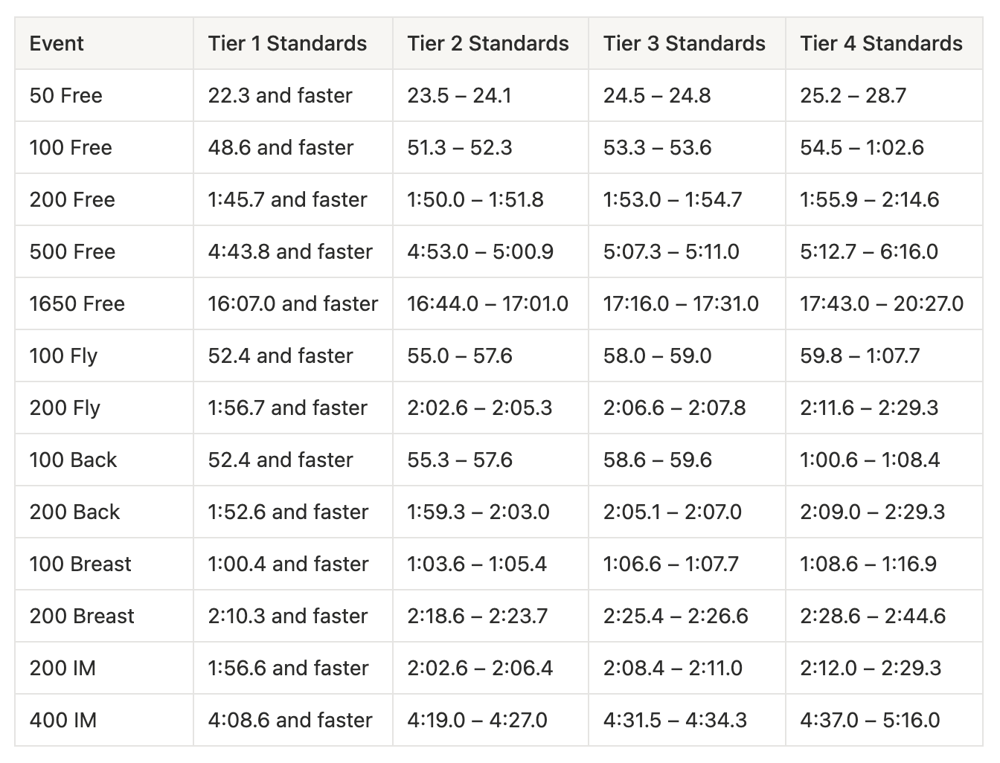

What Scholarship Rates Could Look Like Based On Your Swim Times
By Sport Scholarship USA on January 26 2025
How Scholarships Are Broken Down
For many student-athletes, the word scholarship conjures the idea of a fully funded education. In reality, particularly at the NAIA level, the picture is more complex. Full rides are rare, and the amount awarded depends on several key factors:
Budget Allocation: Each program operates within a budget set by the university. This covers scholarships as well as operational costs, and the size of the budget often reflects how much value the institution places on the sport.
Team Competition: Coaches must divide limited scholarship funds among their roster. Typically, only the top performers secure significant awards, while others may receive partial support or none at all.
International Limitations: Scholarship structures for international athletes can differ from domestic ones. In some cases, coaches must allocate more funds to cover additional fees, reducing flexibility elsewhere.
How Fast Do You Need To Be
Ultimately, scholarship value is closely tied to performance. Faster swimmers elevate a team’s chances of winning, which in turn boosts recognition and can lead to larger budgets. Times are often grouped into tiers that reflect both competitive standing and scholarship potential:
Tier 1: NCAA D1 top‑8 caliber; would likely earn high scholarships and contend for national titles/records.
Tier 2: Strong mid‑major D1 or elite D2/D3 level and NAIA level, likely national champion or high‑scoring All‑American.
Tier 3: Elite NAIA standard; strong All‑American and conference contender, highly sought after with strong scholarship offers.
Tier 4: Competitive for NAIA Nationals and conference points; often awarded good scholarships.
Men’s Competitive College Swimming Timesheet

Women’s Competitive College Swimming Timesheet

Beyond Speed: Other Factors That Matter
While raw speed is often the headline metric, coaches evaluate athletes on far more than just times. Scholarships are investments, and programs want athletes who contribute to the team’s success both in and out of the pool. Several qualities can elevate a swimmer’s value:
Work Ethic and Consistency: Talent alone rarely sustains a career. Coaches look for athletes who show up every day, train with intensity, and demonstrate resilience through setbacks. A swimmer who consistently improves and pushes teammates to do the same becomes indispensable.
Leadership and Team Culture: Championships are won not only by individual stars but by cohesive teams. Athletes who encourage others, maintain a positive attitude, and lead by example help build a culture of accountability and unity. Coaches often reward these intangible contributions with scholarship support.
Academic Reliability: Athletic success means little if eligibility is lost. Strong academic performance signals discipline, maturity, and the ability to balance responsibilities. Universities value student‑athletes who represent the institution well both in competition and in the classroom.
What Comes Next
For aspiring student‑athletes, this is a reminder to align goals with reality. Scholarships are earned through performance, but also through character and commitment. Train harder, refine your times, and focus on academics.
At Sport Scholarship USA, we work to ensure athletes understand the scholarship landscape and position themselves for success. With the right guidance and effort, reaching the next tier is not just possible—it’s within your grasp.